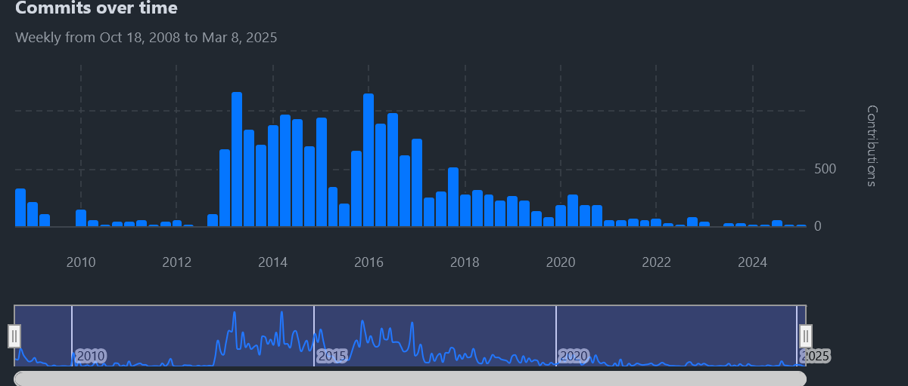
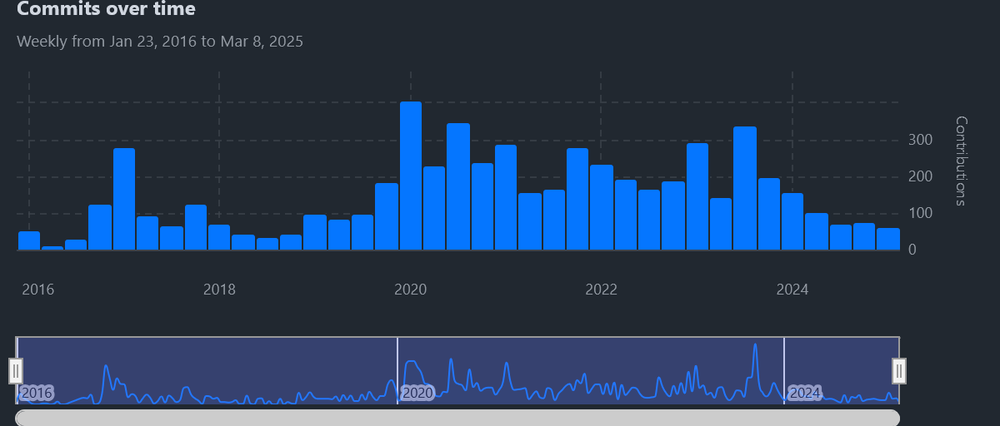

Delve 9: Migrating from Jekyll to Material for MkDocs
"Good tools make good work." - Unknown
From one Static Site to Another
Greetings data delvers! The sharper-eyed among you may have noticed that the website looks a little bit different now. No you aren't seeing things. I recently completely changed the backend of the site from Jekyll to Material for MkDocs. The process was overall pretty smooth but had some hiccups which I think are worth documenting. However, before we get into that, why the change in the first place?
Jekyll, where all the complexity Hydes
The Jekyll project has been around for quite some time (it was originally released in 2008!), and during that time it became the most popular static site generator out there. However, much like its namesake Dr. Jekyll it has developed an ugly side. Jekyll comes from a time when Ruby on Rails ruled the web, however according to the most recent Stack Overflow Developer Survey only 5.2% of respondents use Ruby, compared to languages like Python or Javascript which both are over 50% usage.
We can see this stagnation if we look at commits to the Jekyll project as well on Github:
Figure 1: Jekyll Commits over Time

We can see that commits peaked around 2016 and then declined to the point where there are hardly any at all. The last major release of the project was over a year ago and it has only received minor updates since then. Despite this Jekyll is still the recommended static site generator for GitHub Pages which is why I built the site using it in the first place. This in it of itself would not be an issue if the project was stable, however there have been several occasions where the build of this blog would break due to some Ruby dependency requiring debugging just to publish my latest article, not great. In addition, as someone who has never really professionally worked with Ruby, the unfamiliar toolchain also made extending the framework to add additional functionality difficult, leading to my interest in finding an alternative static site engine.
Material for MkDocs, Made of the Right Stuff
My inspiration for migrating came when I was browsing some of the articles in my favorite Python newsletter PyCoders Weekly and came across one that was using a slick UI (It's a good read by the way). At the bottom of the article was a link stating "Made with Material for MkDocs". Following the link brought me to the Material for MkDocs project and I was instantly impressed with what they had put together. It builds on top of the already popular MkDocs project to provide a clean, modern theme inspired by material design principles. In addition, unlike Jekyll it has pretty active development community and is used by some very popular projects to generate their websites like uv and FastAPI.
Figure 2: Material for MkDocs Commits over Time

Finally, it uses Python as its backend which means it's much easier for me to extend and work with. All of these reasons led me to decide to take the plunge and migrate.
Migrating from Jekyll to Material
To kick things off I started by reading the basic blog tutorial documentation on the Material website. This is a good starting point but as I came to learn, it simplifies some things so it's not an end-all-be-all resource. Fundamentally, both Jekyll and Material use Markdown documents to provide the content for the generated pages, so with some minor adjustments to our folder structure we can get the content of the site to render. This involved migrating to the following directory structure:
├── README.md
├── docs
│ ├── CNAME
│ ├── about.md
│ ├── assets
│ ├── index.md
│ └── posts
├── mkdocs.yml
├── pyproject.toml
└── uv.lock
Note
For my site which is primarily a blog I followed this blog only section of the setup guide to have all of my posts directly under the docs/posts path.
Some other nice things here is since Material is a Python package we can use uv and a pyproject.toml file to manage our dependencies!
The next step was to clean up the Markdown of the posts themselves. For example, the Markdown of my very first post looked something like this:
---
layout: post
title: "Delve 0: Hello Labyrinth (World)!"
author: Chase
categories: Meta
banner:
image: "/assets/images/banners/delve0.png"
---
> It seemed so daunting, "I need to make this model work!", "Running this in a notebook isn't good enough, we need to drive live site traffic against this!", "All of this data is bad!".
## Entering the Labyrinth
Welcome to my blog data delver! I'm so glad you found your way here! If you're like me, when you first started out with data science and machine learning, you may have been feeling overwhelmed. With so many different concepts to learn it may have seemed as if there was an insurmountable labyrinth of information ahead of you, with no clear path towards mastery and practical application. Fear not! For you have found a resource which shall aid you in your own quest to navigate the maze.
### Purpose of this Blog
The purpose of this blog is to document my own "delves" into this labyrinth and any resulting knowledge I have unearthed. I plan to focus on a range of topics, from general software engineering to data science, machine learning engineering, and MLOps, pulling from a range of experiences across my own career as a machine learning engineer and data scientist with a focus on practical, grounded application in industry following best practice.
### Who am I?
My name is Chase Greco, I'm currently a machine learning engineer with 5+ years of industry experience. I love exploring all things machine learning with a particular emphasis on practical application and "making things real". When I'm not writing code, I enjoy swing dancing, reading, and playing video games.
## Delve Data
* Welcome to my blog!
* Stay tuned for more posts on data science, machine learning, and MLOps!
This needed to be slightly modified like so:
---
date: 2023-11-06
categories:
- Meta
---
# Delve 0: Hello Labyrinth (World)!

> It seemed so daunting, "I need to make this model work!", "Running this in a notebook isn't good enough, we need to drive live site traffic against this!", "All of this data is bad!".
## Entering the Labyrinth
Welcome to my blog data delver! I'm so glad you found your way here! If you're like me, when you first started out with data science and machine learning, you may have been feeling overwhelmed. With so many different concepts to learn it may have seemed as if there was an insurmountable labyrinth of information ahead of you, with no clear path towards mastery and practical application. Fear not! For you have found a resource which shall aid you in your own quest to navigate the maze.
<!-- more -->
### Purpose of this Blog
The purpose of this blog is to document my own "delves" into this labyrinth and any resulting knowledge I have unearthed. I plan to focus on a range of topics, from general software engineering to data science, machine learning engineering, and MLOps, pulling from a range of experiences across my own career as a machine learning engineer and data scientist with a focus on practical, grounded application in industry following best practice.
### Who am I?
My name is Chase Greco, I'm currently a machine learning engineer with 5+ years of industry experience. I love exploring all things machine learning with a particular emphasis on practical application and "making things real". When I'm not writing code, I enjoy swing dancing, reading, and playing video games.
## Delve Data
* Welcome to my blog!
* Stay tuned for more posts on data science, machine learning, and MLOps!
A few things to point out:
- The post metadata is much more simplified
- An explicit date now needs to be added to the metadata
categoriesmetadata now needs to be represented as a list- The
titleandbannerneeded to be moved to the main body of the post - A
<!-- more -->comment needed to be added to facilitate marking a cutoff for the post excerpt
Note
For posts that contained links to other posts on this site Material provides a convenient syntax for post links. All of the links needed to be modified to this format to make them work.
Adding Tags
Many of my posts also utilized tags. Fortunately Material has a plugin which supports this. I did need to add a tags.md as the setup guide describes to render a tags index.
Adding an Author
Material also provides a capability for adding an author to each post. If you'd like to use this feature an author avatar image is required.
Tip
Instead of adding the author field to every post metadata, if you'd like all your posts to have the same author you can use the Material Meta Plugin to apply the desired author tag to the entire posts directory by creating a .meta.yml file in your posts directory with the following contents:
- Replace with your author name
Adding Comments
Material also provides instructions for adding comments to your posts using Giscus. Follow the linked instructions and if using the Material Meta Plugin add the following contents to your .meta.yml file to enable comments for all of your posts:
With that you should have your posts fully rended and configured!
Handling Link Migrations
On thing that was very important to me was to not break any existing links to my blog that may have been published. Out of the box Material follows a different schema for post urls which would break any existing links. Fortunately there is a workaround for this.
To begin by default Material does not add .html to the end of urls like Jekyll, however we can change this behavior by adding the following to our mkdcos.yml file:
This adds .html to the end of post urls but Jeykll by default included other information in post urls like categories. For example:
| Engine | URL |
|---|---|
| Jekyll | https://www.datadelver.com/meta/2023/11/06/hello-labyrinth.html |
| Material | https://www.datadelver.com/2023/11/06/delve-0-hello-labyrinth-world.html |
We can handle this by utilizing the mkdocs-redirects plugin to manually redirect these Jekyll url formats to the new Material ones. The trick is we have to link to the old url as if a Markdown file existed at that location.
Functionally this looks like the following section in the mkdocs.yml file:
- redirects:
redirect_maps:
'meta/2023/11/06/hello-labyrinth.md': 'posts/2023-11-06-hello-labyrinth.md'
Using this approach we can redirect all of the old urls to the new format, preserving the functionality of any existing links!
Customizing the Home Page
One final thing I wanted to modify for my blog was the homepage, the default landing page simply displays the list of posts, however I wanted to add a header image. In researching how this could be achieved I found this excellent tutorial by A3Bagged which covers this exact topic.
Note
If you still want to display blog posts on your home page you will need to copy the contents of the blog template and add it to the bottom of your home.html override.
Publishing to Github
Material provides a guide for publishing your site to GitHub Pages. However, since I am using uv to manage the project dependencies I had to modify their script slightly:
name: ci
on:
push:
branches:
- master
- main
permissions:
contents: write
jobs:
deploy:
runs-on: ubuntu-latest
steps:
- uses: actions/checkout@v4
- name: Configure Git Credentials
run: |
git config user.name github-actions[bot]
git config user.email 41898282+github-actions[bot]@users.noreply.github.com
- name: Install uv
uses: astral-sh/setup-uv@v5
- uses: actions/setup-python@v5
with:
python-version-file: ".python-version"
- run: echo "cache_id=$(date --utc '+%V')" >> $GITHUB_ENV
- uses: actions/cache@v4
with:
key: mkdocs-material-${{ env.cache_id }}
path: .cache
restore-keys: |
mkdocs-material-
- name: Install the project
run: uv sync --all-extras --dev
- run: uv run mkdocs gh-deploy --force
With the above modifications publishing to GitHub pages worked flawlessly!
Thoughts on Migrating
Overall, the migration process was pretty smooth. One thing I did notice is the Material documentation sometimes conflicts particularly between the tutorials and the setup guides. I've found a good rule of thumb is to:
- Prefer the plugins section for up to date documentation
- Use the setup section to get context on how to use the plugins
- Use the getting started section sparingly, it seems to be the most out of date
I also didn't fully cover all of the plugins I used for this blog as I think the already existing plugin documentation does a good job of covering it. I encourage you to look at the source code for this site if you are curious how I set anything up though!
I'm very happy I made the jump to Material, I like how the site looks now and am much more confident in my ability to support it moving forward! Let me know in the comments what you think of the redesign!
Delve Data
- Jekyll has historically been the go-to solution for generating static websites to host on GitHub Pages, but has lost steam as of late
- Material for MkDocs provides a more modern, Python-based alternative for generating static websites